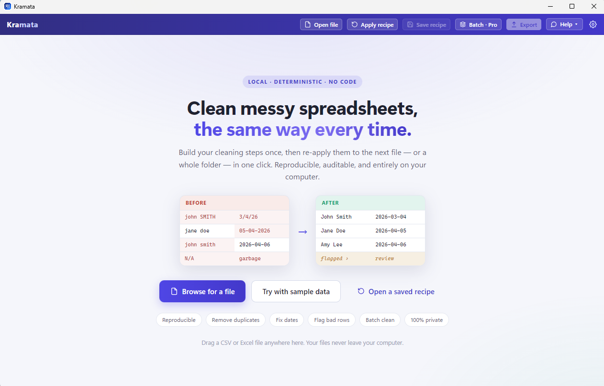

Get the same ugly CSV or Excel export on a schedule? Build your cleaning steps once, then re-apply them to the next file — or a whole folder of them — in one click. No formulas, no code, nothing leaves your computer.
CSV or Excel. Kramata figures out the columns, even messy multi-row headers.
Remove duplicates, fix dates, trim spaces, split columns, flag bad rows — see the result update live.
Next month's file? Load it, click once, done. Identical results, every time.
Pull columns from a second file by matching a key — a reproducible VLOOKUP / XLOOKUP that never breaks.
Group rows and total them (sum, count, average) — a pivot table you can re-run on every new file.
Fold month/category columns into tidy rows in one step — the transform Excel makes painful.
Totals, differences, percentages, averages across columns — no formula language to learn.
Dedupe on any columns, standardize messy date formats, trim spaces, fix case, fill blanks.
Rows that fail your checks go to a separate Flagged list to review & export — never silently dropped.
Run your recipe across a whole folder at once — separate outputs or merged into one.
Same input + same recipe = byte-identical output. Build once, re-run forever.
An in-process database (DuckDB) means large CSVs load and scroll smoothly.

If you do any of these by hand every week, Kramata turns them into a one-click, repeatable recipe.
Combine two spreadsheets by a common column — no broken formulas when columns move.
Summaries that re-run themselves on next month's export.
Non-destructive and repeatable — not a one-off button you re-run from scratch.
Split and merge columns reliably, every time.
Read every format and rewrite them one way.
The repeatable-transforms power, in plain language — built for non-technical analysts.
Simple and honest. The app is free; Pro unlocks unlimited batch processing.
Kramata processes everything locally. Your files — their names, contents, and every value — are never uploaded anywhere. No accounts, no cloud, no AI training on your data.
We collect only anonymous usage stats (like “app opened” or “an error happened”, never your files) to improve the app — and you can turn that off in Settings. Read our privacy details →
Windows 10 & 11. Free to start.
Free · Windows 10 & 11 · x64. Just unzip and run Kramata.exe — no installation needed. Kramata tells you in-app when a new version is out. Also coming to the Microsoft Store.